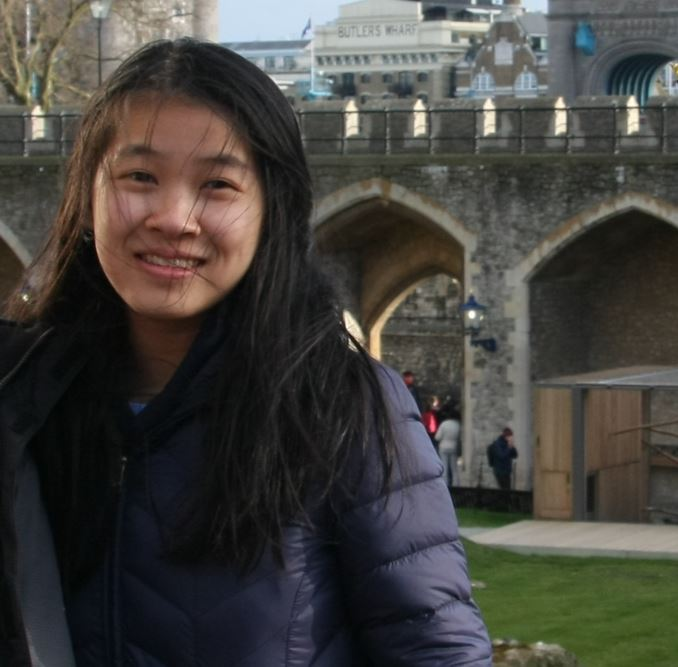

I am a third year MS/PhD student in Computer Science at the University of Massachusetts Amherst. I am a member of UMass NLP and the Statistical Social Language Analysis lab and am advised by Prof. Brendan T. O'Connor. My research interests are broadly in the intersection of natural language processing and computational social science. Currently, I am working on developing zero-shot learning methods for extracting events between pairs of agents from text.
Previously in graduate school, I worked with Prof. David Jensen and my research was in causal structure learning, causal inference, and explainable artificial intelligence. My projects are in Research (and CV). Before graduate school, I worked with Prof. Eric Allender in computational complexity theory and with Prof. Janne Lindqvist in developing methods to explore the privacy and security of ephemeral messages.
In my free time, I play tennis and play the piano.
